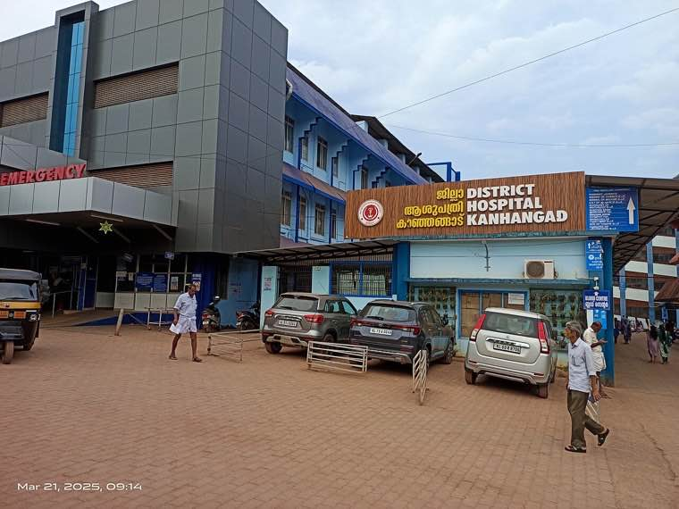
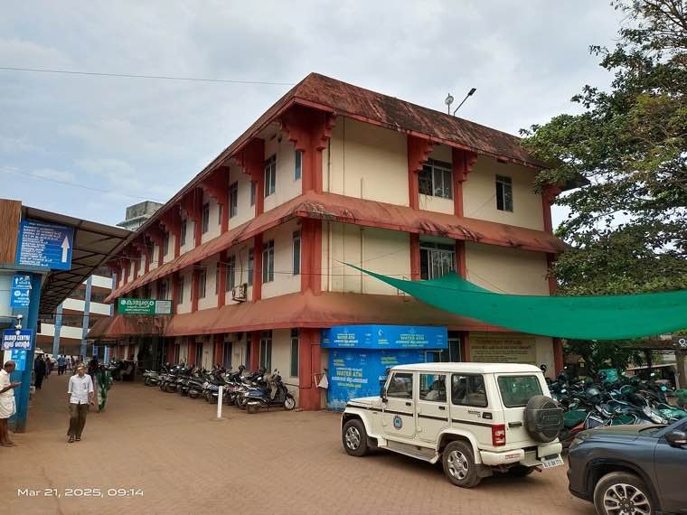
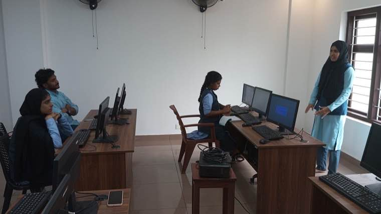
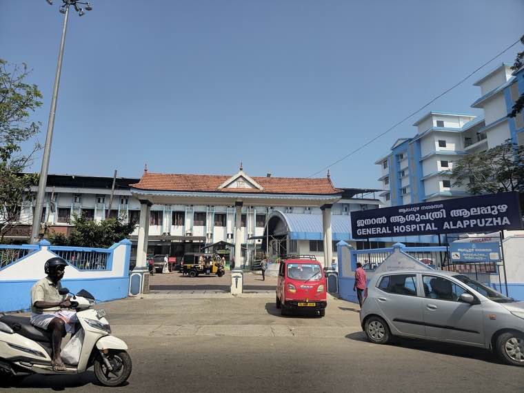

The story in brief
During Covid, knowing whether your block had cases, whether a bed was available, when your vaccine was due, and whether your quarantine status had been registered was the difference between calm and panic. Covid Jagrata made all of that visible — to citizens, officers, and the state — at the same time.
Kerala began the pandemic with a public-health system that was already strong on paper. What it built next was a digital backbone that made every part of that system legible: who was tested, where, with what result, what they needed next, and whether they got it.
For citizens, it meant an actual phone number that worked, a vaccine appointment that didn't move three times, and a hospital that could honestly tell you whether it had a bed before you set out to find one.
What changed for people
- Test results, contact tracing and quarantine support reached citizens within hours, not days.
- Hospital bed and oxygen availability was visible to the public — reducing panic and ambulance roulette.
- Vaccine slot allocation was tied to actual stock, ending the cycle of cancelled appointments.
- Vulnerable populations (elderly, comorbid, palliative) were proactively contacted by ASHAs, not just expected to walk in.
The officer playbook
Overview
Covid Jagrata is the umbrella name for Kerala's integrated pandemic command stack — a coordinated set of digital modules that connected the field (ASHAs, primary health centres) to the state command room, and back.
Its anchoring belief was that data is a service, not a report. Every form filled at a sub-centre had to show up in time to inform the next decision — about ambulance dispatch, oxygen allocation, vaccine routing, or quarantine support.
The system absorbed the early Kerala Rescue learnings: open APIs, citizen-facing front-ends in Malayalam, a moderation/triage layer, and a strong reliance on the existing health volunteer cadre rather than a new bureaucracy.
Challenges
Heterogeneous data sources
Labs, hospitals, primary health centres, ASHAs and call centres all generated different records. Reconciling identities across them without violating privacy was the hardest engineering problem.
Volume and velocity
Peak case loads pushed the system into millions of events per day. Scaling without losing data — or compromising on response times — required disciplined infrastructure choices.
Trust and rumour
Misinformation moved faster than tests. Public dashboards, citizen-facing chatbots and ASHA-led community messaging were as important as the back-end systems.
Equity in vaccination
Smartphone-based slot booking risks excluding the elderly and the poor. ASHA-led walk-in registration and quotas were essential to avoid creating a digital divide on top of a health divide.
What was done
- Established a unified citizen ID (linked to ration card / Aadhaar) for pandemic records, with strict purpose limitation.
- Built a Reverse Quarantine module to proactively shield the elderly and comorbid — not just isolate the infected.
- Connected 1,200+ hospitals to a live bed and oxygen availability dashboard, visible to the public and ambulances.
- Tied vaccine slot opening to actual vial-level inventory at the centre — slots disappear when stock runs out.
- Deployed Disha (the state's health helpline) as the always-on triage and information layer.
- Published district-wise dashboards with consistent definitions — no more parallel numbers from different departments.
Technology & systems
- Microservice architecture on Kubernetes, autoscaled across pandemic peaks
- OpenMRS-derived patient module integrated with eHealth Kerala records
- PostgreSQL with row-level access control for purpose-bound data sharing
- Apache Kafka for the test/result/quarantine event stream
- OTP-based citizen access with explicit consent flows
- Public dashboards built on open standards, embeddable by media partners
Outcomes
- Over 80 million person-records tracked through testing, quarantine and vaccination cycles.
- Mortality kept measurably lower than comparable states in early waves, attributed in part to Reverse Quarantine and bed visibility.
- Vaccine slot adherence reached 99.4% in onboarded centres, with minimal stock wastage.
- The same backbone supported subsequent public-health programmes (TB elimination, NCD screening).
- Kerala's pandemic data stack became a reference model for state-level public health digitisation.
Process flow
1. Citizen identification
Each person has a single record across testing, treatment, quarantine and vaccination, with consent-bound linkages.
2. Event capture
Labs, hospitals, PHCs and ASHAs log every relevant event — tests, beds, oxygen, vaccinations — in near-real-time.
3. Triage and outreach
Disha helpline and ASHA cadre proactively reach out to high-risk and recently-positive citizens.
4. Resource allocation
State and district control rooms see live availability of beds, oxygen and vaccine stock; reallocate dynamically.
5. Public transparency
District dashboards published with consistent definitions; media and citizens consume from the same source.
6. Programme handover
After acute phase, modules pivot to routine public-health programmes — TB, NCD, maternal health.
Replication toolkit
- Reverse Quarantine SOP and ASHA outreach playbook
- Hospital bed and oxygen reporting API specification
- Vaccine slot–to–inventory binding rules and audit logs
- Citizen consent and data-sharing policy templates
- Disha-style integrated helpline staffing and triage model
- Public dashboard definitions and embed kits
On the ground




How it unfolded
- Jan 30, 2020
India's first Covid case (in Kerala)
Existing surveillance triggers state-level response; integrated digital command discussions begin.
- Mar 2020
Disha and quarantine modules go live
Helpline + quarantine register integrated; ASHAs onboarded for proactive outreach.
- May 2020
Reverse Quarantine launched
Elderly and comorbid citizens proactively shielded; case fatality rates remain low through early waves.
- Jan 2021
Vaccination module connected
Slot-to-inventory binding rolled out across districts; ASHA-led walk-in option preserved.
- 2022 →
Pivot to routine public health
Backbone repurposed for TB elimination, NCD screening and maternal/child health programmes.
Documents & templates
Request any of these by email — we will share what is available.
Want to adapt Covid Jagrata in your district?
Tell us your context and constraints — we will connect you with the toolkit and the people who built it.